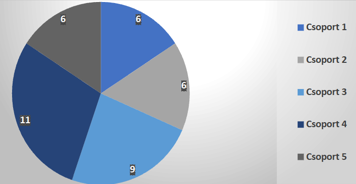
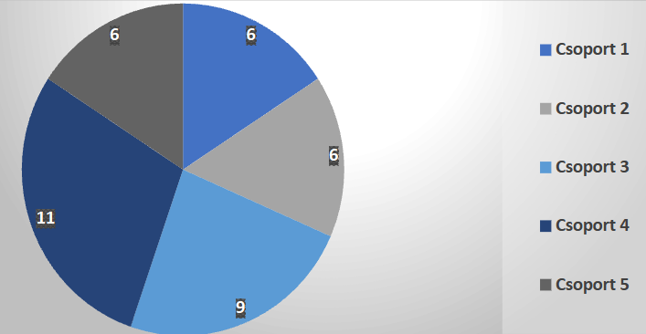

The game has 6 main mechanics >>
- Building construction
- Building repair
- Services
- Random events
- Population happiness and Budget balancing
- Simulation end
Building construction
Buildings can be constructed on empty plots.
The player can construct 3 different types of buildings:
The amount of happiness that the population gains depends on which type of building the player places.
When starting construction must specify the area of the building as well as the turns (months) it will take to complete the building process.
The cost of the building depends on the area the building takes up and the calculated amount gets subtracted from the total budget of the city each month.
Under the surface the construction system uses the project system.
Building repair
Buildings may also be repaired. This starts a repair project which may include multiple buildings and can both be started from the HUD of the game and by right-clicking on the building the player wishes to repair.
Services
Through services the player can gain a stable source of funding. They can include multiple buildings similar to the projects. They also have a cost but depending on their value they also yield returns to the city budget each month. The player can set the name and type when creating a service.
Services can be ended through the HUD at which point they will stop subtracting from the budget but wont add to it either.
Random events
here are 5 random events in the game one of which gets randomly selected at the start each month. The events can have a variety of effects on the city depending on what gets chosen.
The five events are:
- Fireee : multiple houses are damaged (the index of the damaged houses is shown) and the happiness falls by 15%
- Water pipe disaster : the happiness of the people falls by 5% and player has to use 10000$ of budget to fix the issue
- City wide famine : the populations happiness decreeses by 15%.
- Extra government funding : the city gains 100.000$ extra budget
- Nothing happens : nothing happens
Population happiness and Budget balancing
Initial happiness and budget amounts can and must be set upon starting the simulation as well as defining a minimum happiness value.
As stated above different events and happenings in the area have an effect on the happiness and budget of the city. For specific data refer to the paragraphs above.
The happiness value is a range from 0 100% where 0 is the minimum happiness set by the player upon starting the simulation. If the player dips below the specified amount in population happiness or reaches 0$ in city budget before the simulation time period is up the simulation ends early in a game over state.
Simulation end
When the simulation ends the statistics are shown to the player. These are the cause of the sim ending, the budget the player finished with the happiness the city was when the simulation finished and the amount of turns they completed out of the desired amount of rounds.
The game can end because of 3 causes:
- If the player completes the time period set when starting the simulation.
- The population happiness falling below the minimum happiness.
- The city running out of budget.


 
